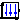

Library MultiBody is a free Modelica package providing 3-dimensional mechanical components to model in a convenient way mechanical systems, such as robots, mechanisms, vehicles. Typical animations generated with this library are shown in the next figure:
For an introduction, have especially a look at:
Copyright © 1998-2013, Modelica Association and DLR.
This Modelica package is free software and the use is completely at your own risk; it can be redistributed and/or modified under the terms of the Modelica License 2. For license conditions (including the disclaimer of warranty) see Modelica.UsersGuide.ModelicaLicense2 or visit https://www.modelica.org/licenses/ModelicaLicense2.
Extends from Modelica.Icons.Package (Icon for standard packages).| Name | Description |
|---|---|
| User's Guide of MultiBody Library | |
|  World | World coordinate system + gravity field + default animation definition |
| Examples that demonstrate the usage of the MultiBody library | |
| Components that exert forces and/or torques between frames | |
| Frames | Functions to transform rotational frame quantities |
| Connectors and partial models for 3-dim. mechanical components | |
| Joints | Components that constrain the motion between two frames |
| Parts | Rigid components such as bodies with mass and inertia and massless rods |
| Sensors to measure variables | |
| Visualizers | 3-dimensional visual objects used for animation |
| Constants and types with choices, especially to build menus | |
| Icons for MultiBody package |
Model World represents a global coordinate system fixed in ground. This model serves several purposes:

Since the gravity field function is required from all bodies with mass and the default settings of animation properties are required from nearly every component, exactly one instance of model World needs to be present in every model on the top level. The basic declaration needs to be:
inner Modelica.Mechanics.MultiBody.World world
Note, it must be an inner declaration with instance name world in order that this world object can be accessed from all objects in the model. When dragging the "World" object from the package browser into the diagram layer, this declaration is automatically generated (this is defined via annotations in model World).
All vectors and tensors of a mechanical system are resolved in a frame that is local to the corresponding component. Usually, if all relative joint coordinates vanish, the local frames of all components are parallel to each other, as well as to the world frame (this holds as long as a Parts.FixedRotation, component is not used). In this "reference configuration" it is therefore alternatively possible to resolve all vectors in the world frame, since all frames are parallel to each other. This is often very convenient. In order to give some visual support in such a situation, in the icon of a World instance two axes of the world frame are shown and the labels of these axes can be set via parameters.
| Name | Description |
|---|---|
| enableAnimation | = true, if animation of all components is enabled |
| animateWorld | = true, if world coordinate system shall be visualized |
| animateGravity | = true, if gravity field shall be visualized (acceleration vector or field center) |
| label1 | Label of horizontal axis in icon |
| label2 | Label of vertical axis in icon |
| gravityType | Type of gravity field |
| g | Constant gravity acceleration [m/s2] |
| n | Direction of gravity resolved in world frame (gravity = g*n/length(n)) [1] |
| mue | Gravity field constant (default = field constant of earth) [m3/s2] |
| driveTrainMechanics3D | = true, if 3-dim. mechanical effects of Parts.Mounting1D/Rotor1D/BevelGear1D shall be taken into account |
| replaceable function gravityAcceleration | Function to compute the gravity acceleration, resolved in world frame |
| Animation | |
| if animateWorld = true | |
| axisLength | Length of world axes arrows [m] |
| axisDiameter | Diameter of world axes arrows [m] |
| axisShowLabels | = true, if labels shall be shown |
| axisColor_x | Color of x-arrow |
| axisColor_y | |
| axisColor_z | Color of z-arrow |
| if animateGravity = true and gravityType = UniformGravity | |
| gravityArrowTail[3] | Position vector from origin of world frame to arrow tail, resolved in world frame [m] |
| gravityArrowLength | Length of gravity arrow [m] |
| gravityArrowDiameter | Diameter of gravity arrow [m] |
| gravityArrowColor | Color of gravity arrow |
| if animateGravity = true and gravityType = PointGravity | |
| gravitySphereDiameter | Diameter of sphere representing gravity center (default = mean diameter of earth) [m] |
| gravitySphereColor | Color of gravity sphere |
| Defaults | |
| nominalLength | "Nominal" length of multi-body system [m] |
| defaultAxisLength | Default for length of a frame axis (but not world frame) [m] |
| defaultJointLength | Default for the fixed length of a shape representing a joint [m] |
| defaultJointWidth | Default for the fixed width of a shape representing a joint [m] |
| defaultForceLength | Default for the fixed length of a shape representing a force (e.g., damper) [m] |
| defaultForceWidth | Default for the fixed width of a shape representing a force (e.g., spring, bushing) [m] |
| defaultBodyDiameter | Default for diameter of sphere representing the center of mass of a body [m] |
| defaultWidthFraction | Default for shape width as a fraction of shape length (e.g., for Parts.FixedTranslation) |
| defaultArrowDiameter | Default for arrow diameter (e.g., of forces, torques, sensors) [m] |
| defaultFrameDiameterFraction | Default for arrow diameter of a coordinate system as a fraction of axis length |
| defaultSpecularCoefficient | Default reflection of ambient light (= 0: light is completely absorbed) |
| defaultN_to_m | Default scaling of force arrows (length = force/defaultN_to_m) [N/m] |
| defaultNm_to_m | Default scaling of torque arrows (length = torque/defaultNm_to_m) [N.m/m] |
| Name | Description |
|---|---|
| frame_b | Coordinate system fixed in the origin of the world frame |
| replaceable function gravityAcceleration | Function to compute the gravity acceleration, resolved in world frame |